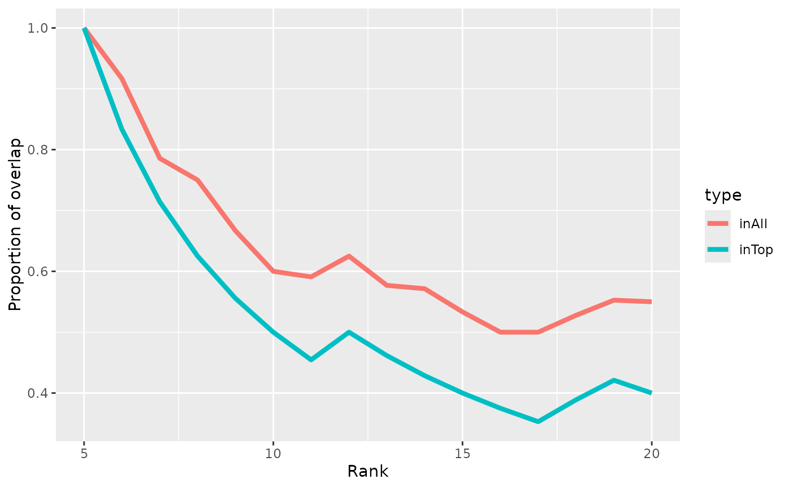

regionCAT
regionCAT.RdComputes/plots the 'concordance at the top' (CAT) of two lists of genomic regions.
Usage
regionCAT(
regions1,
regions2,
start = 5L,
concord.type = c("both", "inTop", "inAll"),
returnData = FALSE,
ignore.strand = TRUE
)Arguments
- regions1, regions2
A GRanges object with a `score` metadata column according to which the regions will be ranked (descending).
- start
The rank at which to start plotting (removes large variations at the beginning when very few regions are considered)
- concord.type
Concordance type to plot, either 'inTop', 'inAll', or 'both' (see details). Ignored if `returnData=TRUE`.
- returnData
Logical; whether to return the data instead of plotting.
- ignore.strand
Logical; whether to ignore the strand for computing overlap (default TRUE)
Details
The two concordance types are as follows: * 'inTop' indicates the proportion of the top X regions that are in the top X in both lists. * 'all' indicates the proportion of the top X regions that are anywhere in the other list (since this relationship is asymmetrical, the mean of both two directions is used).
Examples
# we create two GRanges with scores, which have similar high-score peaks but
# the rest random:
gr1 <- GRanges("seq1", IRanges(runif(20,1,2000), width=20),
score=20:1)
gr2 <- GRanges("seq1", c(head(ranges(gr1),5),
IRanges(runif(15,1,2000), width=20)),
score=c(20:16, sample.int(15)))
regionCAT(gr1,gr2)
